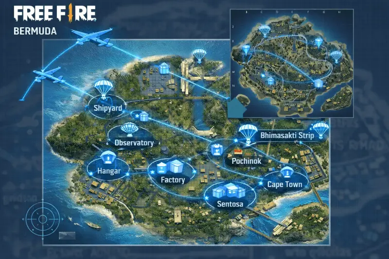

Guía de supervivencia en Bermuda 2026: los mejores lugares para caer en Free Fire

En Free Fire la partida se gana o se pierde en los primeros 90 segundos. La decisión de dónde aterrizar en Bermuda define si comienzas equipado con armas de nivel 3 o con las manos vacías. En las partidas clasificatorias, donde cada punto cuenta, esta decisión estratégica separa a los jugadores que suben de rango de los que se estancan semana tras semana.
Por qué el landing lo es todo en ranked
El sistema de puntos del ranked de Free Fire en 2026 premia tanto las eliminaciones como la supervivencia. Un jugador que termina en el top 10 sin una sola kill suma más puntos que uno que hace 3 kills y muere en el puesto 30. Esto crea una tensión estratégica constante entre buscar el loot de alta calidad —que suele estar en zonas muy disputadas— y sobrevivir el tiempo suficiente para acumular puntos de posición. Definir tu estrategia de landing antes de que empiece la partida es la primera decisión táctica de cada sesión ranked.
Zonas de alto riesgo y alto loot: Peak, Clock Tower y Pochinok
Peak — El punto más codiciado de Bermuda
Peak sigue siendo en 2026 la zona con mayor densidad de loot de nivel 3 por metro cuadrado de todo el mapa. Su posición elevada en el norte le da ventaja de visibilidad táctica a quien lo controla. La arquitectura favorece el combate cerrado: edificios de varios pisos, escaleras estrechas y múltiples puntos de cobertura. En torneos latinoamericanos, la tasa de aterrizaje en Peak supera el 30% de las escuadras por partida. Estrategia: aterriza en la cima del edificio más alto, recoge el arma más cercana y sube siempre — nunca bajes primero. Si tu escuadra llega segunda a Peak, la rotación inmediata al este es más rentable que forzar un combate en desventaja.
Clock Tower — El nexo de rotación del mapa
La Torre del Reloj está en el centro de Bermuda y prácticamente cualquier ruta de rotación puede pasar por ella. Su loot es consistentemente bueno —nivel 2 a nivel 3— y la estructura de la torre ofrece ventaja de altura a quien la controla. El problema de Clock Tower en ranked es su centralidad: los equipos que se quedan en la torre después del minuto 3 se convierten en objetivo de convergencia de múltiples escuadras. Estrategia: úsala como zona de equipamiento rápido, no como campamento. Equípate en 60–90 segundos y muévete hacia la zona segura antes de que el tráfico de rotación llegue.
Zonas seguras para rankear con consistencia: Rim Nam y Sentosa
Rim Nam Village — La zona predilecta del jugador de posición
Rim Nam Village, en el borde sureste del mapa, es la zona predilecta de los jugadores de ranked que priorizan la supervivencia sobre el combate temprano. Su posición periférica significa que pocas escuadras aterrizan ahí salvo que el trayecto del avión pase directamente sobre ella. El loot es nivel 1 a nivel 2, suficiente para manejar los enfrentamientos del círculo medio cuando la mayoría de rivales ya se eliminaron entre sí. Los vehículos en esta zona suelen estar intactos. Estrategia: equípate completamente, gestiona el inventario antes de la primera rotación y sal en dirección al centro cuando el primer círculo se marque.
Sentosa — Loot decente con bajo tráfico
Sentosa ofrece una densidad de loot superior a Rim Nam Village —más edificios y mayor variedad de armas de nivel 2— y sigue siendo suficientemente periférica para evitar el tráfico masivo de la primera fase. La carretera costera que conecta Sentosa con el centro del mapa suele tener jeeps o motos intactos, lo que permite rotaciones rápidas hacia el círculo sin exponerse al fuego de campo abierto. Es la zona recomendada para equipos que quieren equilibrar equipamiento sólido con probabilidad alta de llegar al top 15.
Rutas de rotación según la posición del círculo seguro
La rotación es el aspecto más subestimado del ranked. Un equipo que llega al círculo final con buena posición gana más veces que uno que llega primero pero sin cobertura:
- Círculo al norte (Peak area): desde Rim Nam o Sentosa, usa la carretera costera este con vehículo. Sube por la línea de árboles para llegar con cobertura natural en lugar de cruzar campo abierto.
- Círculo al centro (Clock Tower area): rotación directa por carretera central. Sale antes del minuto 5 para evitar el cruce con equipos que rotan desde Pochinok.
- Círculo al sur (costa): ventaja para quienes aterrizaron en el sureste. Mantén la costa como cobertura y avanza pegado al límite del mapa para evitar ser flanqueado desde el interior.
Estrategias para jugar en escuadra de cuatro
- Un jugador como fragger adelantado: recoge siempre el arma más poderosa disponible en el landing y cubre las entradas de cobertura. Es quien inicia los enfrentamientos con ventaja de posición.
- Un jugador como support con kit médico: prioriza el chaleco y el casco sobre las armas ofensivas, lleva el mayor stock de kits médicos posible y nunca entra primero en zonas de conflicto. Su trabajo es mantener al fragger activo, no hacer kills.
- Un jugador como sniper para presión a distancia: el AWM o el SKS correctamente posicionado limpia posiciones enemigas antes de que el equipo necesite entrar en combate directo.
- Comunicación de zona segura antes de la primera rotación: decide qué dirección toma el equipo si el círculo aparece desfavorable antes de que aparezca. Tomar esa decisión bajo presión produce errores. Planificada con anticipación produce rotaciones coordinadas.
- No perseguir kills fuera del círculo: cada segundo fuera del área segura resta vida. Prioriza la supervivencia sobre la eliminación cuando estés en los límites del área segura.